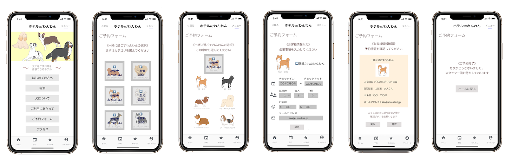

上記のものは、「参拝のプロセスを図解する」という課題で制作した作品である。
日本人だけでなく、海外の方など誰が見ても伝わるように考えて取り組んだ。
作業の中でも参道の真ん中を歩いてはいけないということを表現するのが難しい点であった。
使用したツール：Adobe Illustrator
選んだ犬と一緒に泊まれる架空のホテルの予約画面を設計したものである。
サイトマップ、ペーパープロトタイプ、UIプロトタイピングの順で行った。
このインタラクションの目的はペルソナが予約完了まで達成することである。
淡い色合いを使うことで優しい印象になるように取り組んだ。
使用したツール：Figma
作成したプロトタイプはこちら